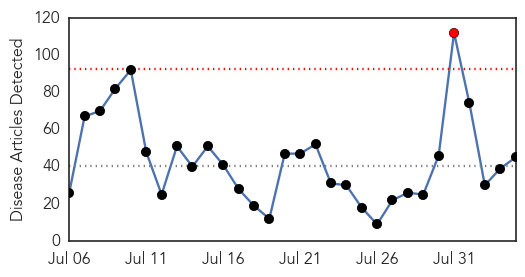
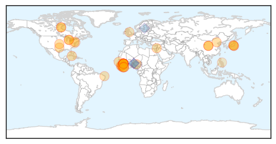
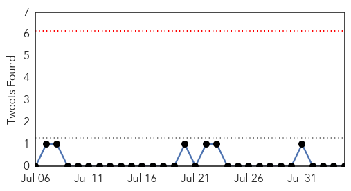
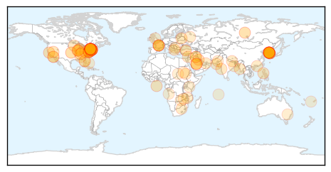
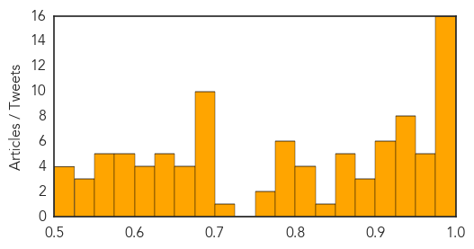

Ebola
30-Day Web Trend
1 alerts, 0 warnings

30-Day Twitter Trend
0 alerts, 0 warnings

Article Locations
Article Confidences

Top Articles:
- 1.000
- Liberia president apologises for high toll for Ebola health workers
- 1.000
- Sierra Leone concerns grow from new Ebola case
- 0.999
- New Ebola Vaccine Is Very Effective In Clinical Trial
- 0.999
- Why a breakthrough in the quest for an effective Ebola vaccine took so long
- 0.999
- Nigeria, West Africa and Ebola vaccine
- 0.998
- Ebola Vaccine Might Be Very Effective in Preventing the Disease
- 0.998
- Sierra Leone Indicates New Cases Of Ebola
- 0.998
- China's Foreign Minister to Visit Ebola-Stricken West African Countries : Society : Chinatopix
- 0.997
- China Foreign Minister to visit 3 nations worst-hit by Ebola
- 0.993
- Ebola vaccine “extremely promising” in clinical trial
- 0.992
- Ebola Vaccine Candidate Promising – MedPage Today
- 0.990
- FDA Grants Special Status for Rapid Ebola Test
- 0.990
- BMJ Blogs: The BMJ Blog Archive Daniel Cooper: On the frontline at the Kerry Town treatment unit
- 0.989
- Ebola vaccine: changing fate with confidence
- 0.988
- CDC’s brash top modeler makes disease estimates and courts controversy
- 0.986
- Rebuilding African Societies Is The Long Term Solution To The Healthcare Crisis
- 0.986
- We Now Know the Reasons Behind "Fearbola"
- 0.984
- Ebola Vaccine Test Successful on Over 7,600 People in Guinea
- 0.981
- Ebola Cases Fall Sharply, W.H.O. Reports
- 0.978
- Ebola: A Q&A about a promising new Canadian-made vaccine, and MSF's role in the clinical trial
- 0.971
- WHO: 'Ring' Vaccination for Ebola Very Promising
- 0.968
- CDC’s epidemic predictor makes estimates, courts controversy
- 0.960
- Just 2 Ebola cases reported in past week but risks remain, WHO says
- 0.953
- China's foreign minister to visit Ebola-affected countries - World
- 0.953
- China's foreign minister to visit Ebola-affected countries
- 0.952
- China's foreign minister to visit Ebola-affected countries
- 0.934
- Japan lab to handle deadliest viruses for first time
- 0.929
- Japan unveils ebola facility
- 0.880
- Bronx Legionnaires’ Outbreak is ‘Largest’ in New York City’s History
- 0.879
- The World Health Organization Is Having to Deal With Olympic Water Safety Instead of World Health
- 0.878
- More than 70,000 children born during the Ebola outbreak in Liberia at risk of exclusion if not registered, warns UNICEF
- 0.834
- A little girl in Liberia has thanked science for Ebola vaccine
- 0.800
- Global vaccine fund could prevent deadly disease outbreak
- 0.792
- TNIMA Graduates to Get on GOL Payroll ‘Right Away’
- 0.729
- Global vaccine fund could prevent deadly disease outbreak
- 0.714
- Japanese Lab to Handle Ebola, Other Pathogens After 30 Years of Local Opposition
- 0.706
- An Appeal to our MPs
- 0.701
- An Appeal to our Members of Parliament
- 0.661
- World News Quick Take
- 0.638
- Sierra Leone still vigilant for Ebola
- 0.620
- Chinese Ambassador Zhao Yanbo Meets with Mayor of Freetown
- 0.619
- Obama Gov’s Global vaccine fund could find Vaccine for Ebola: Scientists
- 0.563
- Coventry nurse says there was no time to be afraid while fighting deadly Ebola virus
- 0.538
- Japan’s first BSL-4 lab to open in western Tokyo in August
- 0.522
- SORRY….LACK OF EMAIL…. – Thoughts from the States
Top Tweets:
- 0.944
- Il faut tout un village pour combattre le virus Ebola et un continent pour gagner la guerre. Africaagainstebola
- 0.926
- WHO: West Africa Ebola Epidemic Could Be Over by Year End - Voice of America http://t.co/Bhco2A0Jgw ebola EVD
- 0.914
- REJOIGNEZ LA CAMPAGNE CONTRE LE VIRUS EBOLA Africaagainsebola http://t.co/FRDo4F0Kwh
- 0.902
- Two Ebola cases reported in past week but risks remain: WHO - Yahoo News http://t.co/ZkQ8mZH6sx ebola EVD
- 0.885
- Only two Ebola cases reported in past week, but risks remain: WHO - Reuters UK http://t.co/glHUN2UrM4 ebola EVD
- 0.881
- Nigeria ready for Ebola resurgence — Official - Premium Times http://t.co/iSYj3dVJzn ebola EVD
- 0.880
- Hospital investment to treat Ebola helping in other ways - KARE http://t.co/vvK3hhEBB9 ebola EVD
- 0.875
- OMS anuncia vacina que pode ser "divisor de águas" no combate ao ebola http://t.co/NO2XsAB0JH
- 0.868
- IL EST TEMPS POUR L'AFRIQUE DE S'ÉLEVER CONTRE EBOLA ET DE LE CONTENIR.Africaagainstebola
- 0.853
- What '100 Percent Effective' Means for That Ebola Vaccine - Wired http://t.co/pFQrjKzhDB ebola EVD
- 0.852
- FG Ready For Ebola Resurgence - Leadership Newspapers http://t.co/bBRCE6EVGq ebola EVD
- 0.833
- RT: Adding to Ebola vaccine RCT, @TheLancetInfDis safety & immunogenicity VSV Ebola vaccine in Swiss cohort ht…
- 0.833
- Liberia launches child registration drive post Ebola crisis - euronews http://t.co/Ovu39CFmLc ebola EVD
- 0.821
- ajuda a registrar 70 mil crianças nascidas durante surto de ebola SerraLeoa http://t.co/OpPx8OamxP
- 0.794
- Tokyo laboratory to handle world's deadliest viruses including Ebola after ... - South China Morni... http://t.co/2ahhveqDXX ebola EVD
- 0.774
- Reviewing today’s Ebola situation report in Sierra Leone. Strong surveillance, testing critical until we gettozero. http://t.co/xuEyvXVsGA
- 0.744
- Ebola Experts Caution: Vaccine Still Months Away http://t.co/DJc48M41yU
- 0.735
- RT: head of USCDC in Sierra Leone as new Ebola cases spark concern http://t.co/Pkg699qDFN Tonkolili District 2 new cases http:…
- 0.732
- China's foreign minister to visit Ebola-affected countries - Reuters http://t.co/8wQqSl3GOR ebola EVD
- 0.732
- China's foreign minister to visit Ebola-affected countries - Reuters http://t.co/5ol9EoSwv7 ebola EVD
- 0.718
- China's foreign minister to visit Ebola-affected countries - Yahoo News http://t.co/0LKl0F17jg ebola EVD
- 0.708
- Ebola: The Transformation of Redemption Hospital Liberia http://t.co/T2CLq3Gpse
Unknown
30-Day Web Trend
0 alerts, 0 warnings

30-Day Twitter Trend
0 alerts, 0 warnings

Article Locations
Article Confidences
Top Articles:
- 0.997
- (LEAD) S. Korea reports no additional MERS cases for 30th consecutive day
- 0.995
- 3 More People Die, 10 More Sick in Bronx Legionnaires’ Outbreak, as Residents Pack Town Hall Meeting
- 0.991
- NYC outbreak of Legionnaires’ disease kills seven
- 0.990
- Seven dead in Bronx in Legionnaires' Disease outbreak
- 0.989
- South Korea president replaces health minister after Mers outbreak, Government & Economy
- 0.988
- Legionnaires' disease in New York: what is it and how does it spread?
- 0.988
- South Korea's president replaces health minister, widely blamed for mishandling Mers outbreak, East Asia News & Top Stories
- 0.987
- South Korea President replaces health minister after MERS outbreak
- 0.987
- South Korea’s president dumps health minister after poor response to Mers outbreak
- 0.987
- The Doctor Is In: Legionnaires' outbreak must be contained
- 0.985
- S. Korea president swaps health minister after MERS outbreak
- 0.981
- S. Korean minister sacked over Mers crisis, Asia News & Top Stories
- 0.980
- Death toll in South Bronx Legionnaires' disease outbreak rises to 7, officials say
- 0.980
- Death toll rises in outbreak of Legionnaires' disease in NYC
- 0.978
- Seven dead, 86 infected as New York officials identify and disinfect cooling towers filled with Legionnaires bacteria
- 0.975
- Patients from UAE return to South Korea as Mers scare subsides
- 0.974
- The Portland Press Herald / Maine Sunday Telegram
- 0.966
- Legionnaires outbreak kills seven in New York
- 0.965
- City vows action to prevent Legionnaires' outbreaks
- 0.958
- Legionnaire's Disease: NYC Outbreak Leaves 7 Dead, Michigan Woman Also Dead
- 0.955
- NYC targets cooling systems linked to Legionnaires' outbreak
- 0.949
- Death toll from Legionnaires’ disease outbreak in NYC rises to 7
- 0.946
- Legionnaire’s Disease Death Toll Rises to 7 in New York
- 0.943
- USA needs to take immediate steps to fight super bugs, experts say
- 0.939
- 7 people with Legionnaires’ disease have died in NY outbreak
- 0.934
- 7 Total Dead From Legionnaires' As Officials Announce 3 More Deaths
- 0.933
- Number of Legionnaires' Cases Rises to 86 Amid Deadly Outbreak
- 0.929
- Death toll from legionnaires' disease outbreak in New York climbs to seven
- 0.925
- Legionnaires’ disease outbreak claims fourth victim in New York
- 0.924
- What you need to know about the Legionnaire's disease outbreak in NYC
- 0.917
- Chicago Tribune
- 0.917
- Chicago Tribune
- 0.917
- Chicago Tribune
- 0.917
- Chicago Tribune
- 0.914
- New York legionnaires' disease outbreak leaves seven dead, officials say
- 0.898
- CDC: Coordinated approach could cut projected ‘superbug’ infections in half
- 0.889
- South Bronx Legionnaires' disease death toll rises to seven
- 0.884
- NYC health official expects more Legionnaires’ disease cases
- 0.870
- Two-dose chickenpox vaccination program reduces US outbreaks by 78%
- 0.865
- Better Control of Drug-Resistant Germs Could Save Thousands of Lives: CDC
- 0.859
- The Chosun Ilbo (English Edition): Daily News from Korea
- 0.856
- whole pig
- 0.853
- 86 cases of deadly Legionnaires’ disease confirmed in South Bronx
- 0.846
- S. Korean health minister replaced by doctor after MERS
- 0.818
- De Blasio Pushes Legislation to Combat Legionnaires' Disease Outbreak
- 0.813
- Virus-like nanoparticle vaccine effective against RSV
- 0.804
- Four dead from Legionnaires' disease in NY
- 0.804
- Park nominates medical professor as new health minister
- 0.798
- Turbidity Alerts Las Vegas Area To Water-Borne Diseases
- 0.798
- Belarus suspends pork imports from Russia's Vladimir Oblast
Showing top 50 articles...
Top Tweets:
- 0.562
- RT: @danieljdejesus La pobre educación en general y la falta de interés genuino de aprender algo cada día.